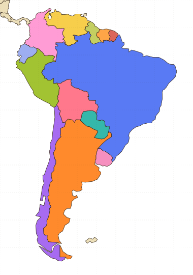
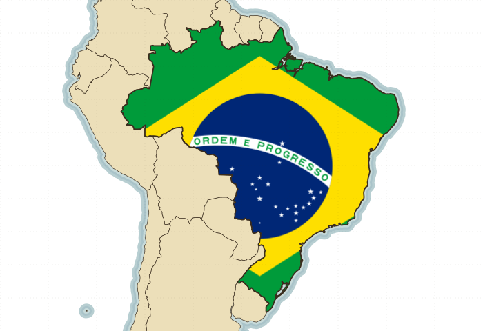

Greetings from
South America
Complete
13/13
Time 0:25
A sample set of places.
A little more of the map learned.
Inspect the completed map's raised edge, replay its postcard reveal, and see clean flag images inside real country outlines. This is a design preview with sample results.
Sample session · illustrative map
The real application will use its actual session results.
Map view. Preview the end-of-session reveal.

MADE WITH NATURAL EARTH · DESIGN PREVIEWGreetings from
Time 0:25
A sample set of places.
A little more of the map learned.
The raised edge is a crisp red offset silhouette, not a blurred shadow. Switch it off to compare the flat map; both the main view and postcard use the same depth layer. Completion motion remains skippable and supports reduced motion.
The country stays in geographic context.
The complete flag remains visible beside it.

Brazil's flag is displayed inside its country shape.
Full-detail SVG images.
No pixel filter or raster-grid conversion.
Flags use their normal artwork and proportions. The pixel style belongs to small objects and the interface; coats of arms, lettering, stars, and other flag details stay intact.
Flag images retain the upstream artwork. Map clipping illustrates the proposed correct-answer effect. Asset sources and experiment notes.